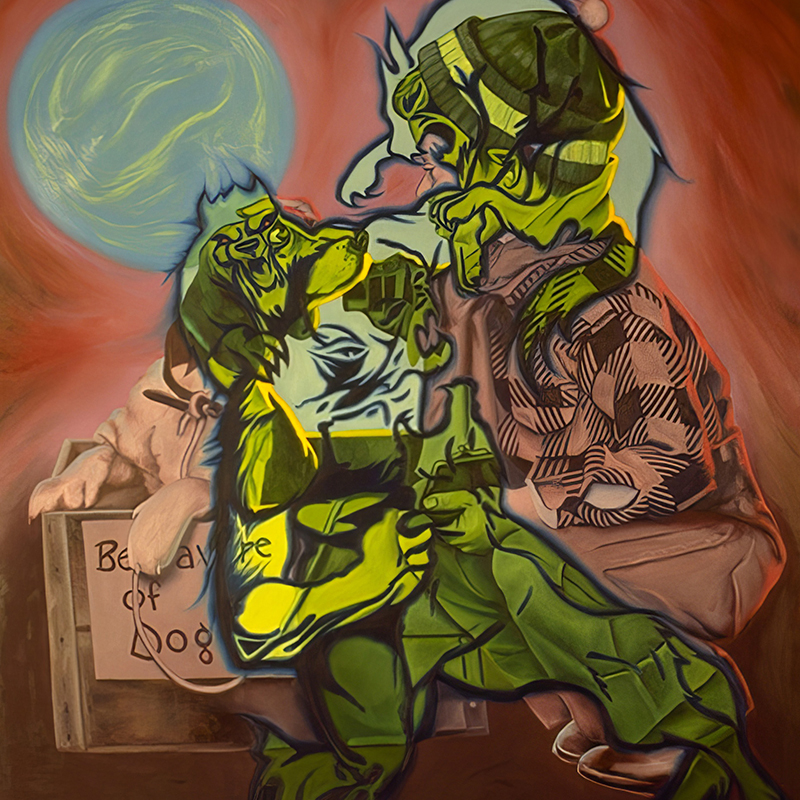
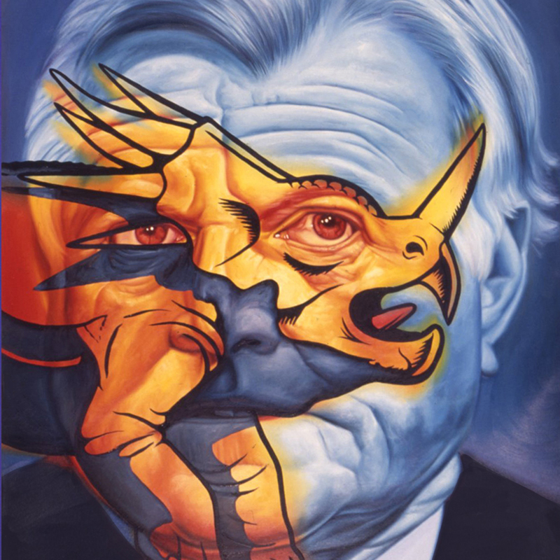
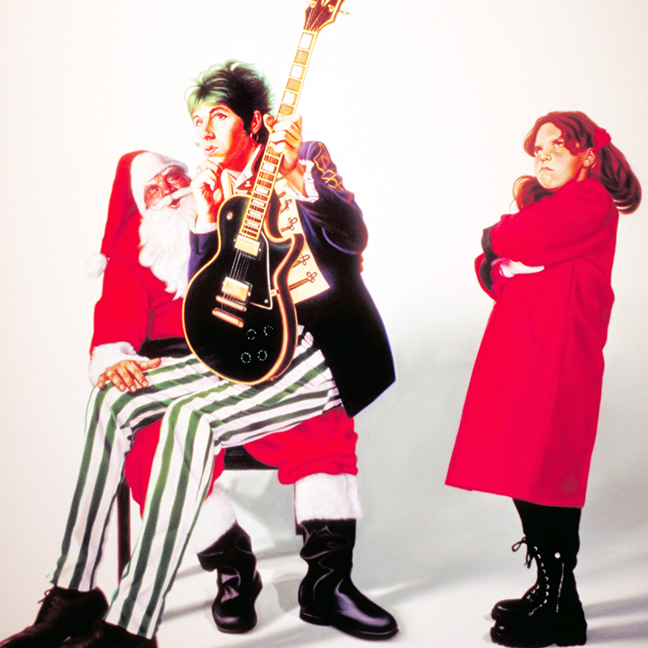
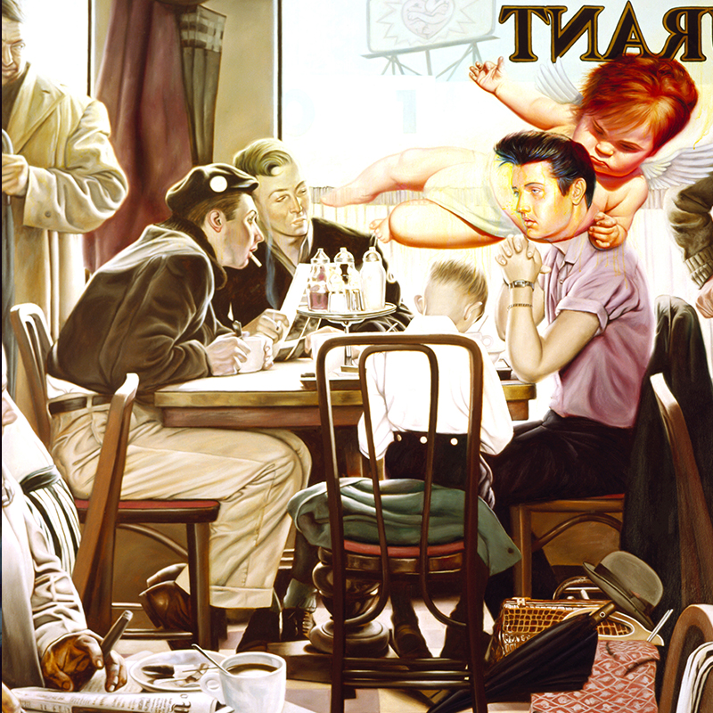
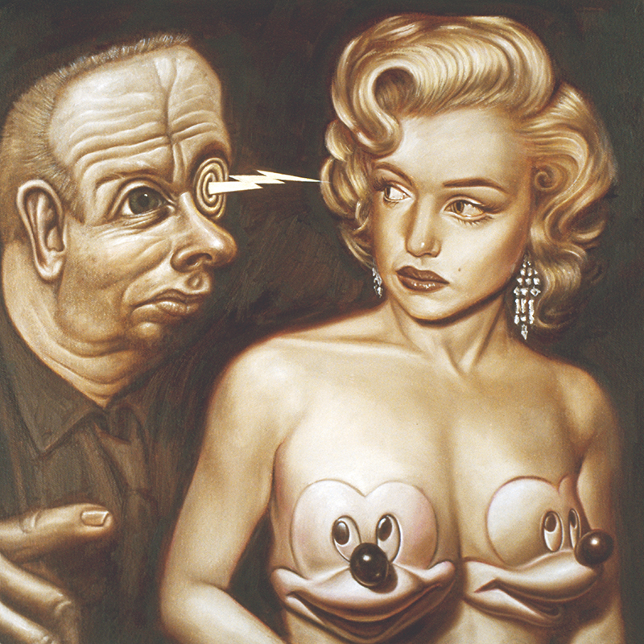

1990
1991

1992

1993

1994

1995

1996
1997

1998

A chronological index of documented paintings and works on paper currently attributed to the 1990s.
This page provides entry points to year-level catalogues for works presently documented within the decade. Years and records reflect the best available documentation at the time of publication, and entries may be added, revised, or reassigned as additional primary sources and verified records emerge.




